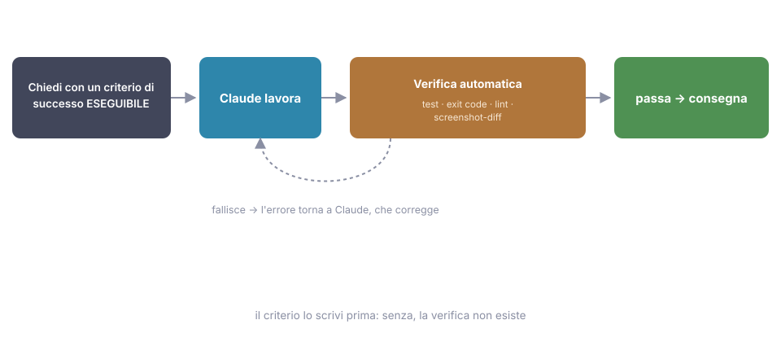

11 - Verification: the most important principle in this whole guide¶
Source: official best practices ("the single most impactful tip in this guide is verification") + docs on hooks and /goal, July 2026.
The problem¶
A scenario that sooner or later happens to everyone: you ask for a change, Claude works for a few minutes, wraps up with a reassuring "done, it works now", you trust it, you merge. At 6:30 pm you discover the payment form no longer submits anything. The code looked right. The message sounded confident. But nobody had actually verified anything: not Claude, not you.
The difference between a session you have to babysit line by line and one you can walk away from comes down to one thing: does Claude have a way to verify its own work? If yes, the loop becomes work → check → fix → repeat until it passes, without you in the middle. If no, you are the test runner, and you're also the bottleneck.

1 · The criterion comes first. Your prompt already states how the result gets checked: a test, a command, an exit code. Without this step, the rest of the cycle doesn't exist.
2 · Claude works. It reads, edits, runs. You're not supervising line by line: you're waiting for the verdict.
3 · Verification runs on its own. Tests, exit codes, lint, screenshot diffs: it's the criterion from step 1 turned into a machine.
4 · On failure, the error goes back to Claude. It fixes and retries: the loop is closed and doesn't need you in the middle.
5 · When it passes, ship. The full cycle: criterion first, automatic verification, correction in between.
How to apply it: give Claude an executable criterion¶
For a frontend dev, the "ways to verify" are concrete and almost always already in the project:
| Method | When to use it | What it catches |
|---|---|---|
| Tests | write the tests first (they must fail), then implement until they pass | functional regressions; TDD pairs with Claude better than it does with humans, because a failing test is a signal the model can read and chase on its own |
| Build's exit code | npm run build exiting 0 |
a broken build before it reaches deploy |
| Lint/typecheck | tsc --noEmit |
type errors, before the code even runs |
| Screenshot compared against the mock | "here's the design; implement it, take a screenshot, compare, list the differences, fix them" (ch. 10) | visual deviations from the design that tests don't see |
An executable success criterion
A complete prompt, to pin down the shape:
Add validation to @src/components/CheckoutForm.tsx: email required
and in a valid format, ZIP code with 5 digits. First write the Vitest
tests for these cases (they must fail), then implement. Consider it
done only when npm test passes and tsc --noEmit exits clean.
Note the structure: what to do, how to verify it, when to stop. The verification criterion costs one extra line and changes everything that comes before it.
Why it works¶
Without a criterion, "done" is the model's judgment about itself, and the model, like anyone who has just written some code, tends to believe it. With an executable criterion, "done" becomes an observable fact: the test passes or it doesn't. Claude can iterate against that fact on its own, and every iteration burns its time, not yours.
Ask for evidence, not assertions¶
Trust without verification
"Done, it works now" is not information: it's a hope.
The countermove is always the same question, in three variants:
"Show me the test output." "Paste the build's exit code." "Take a screenshot of the component as it is right now."
Reviewing the evidence is much faster than re-verifying everything by hand. And there's a valuable side effect: Claude, knowing it will have to produce that evidence, works better, exactly like a junior who knows the PR will actually be read.
The signal to watch for: you notice you're about to accept a "done" on its word. Stop right there and ask for the evidence.
The verification ladder¶
Four levels, from lightest to most locked-down. There's only one criterion for climbing: how much the error costs if it slips through.
- In the prompt: "…and consider it done only when
npm testpasses". Free, works almost always. It's the default: if you're not doing at least this, start here. /goal: you declare the condition ("all tests pass and the build is green") and a separate evaluator re-checks it every turn, refusing to let the session close until it's true. Useful when the session is long and you worry the criterion written in the prompt will "fade" along the way.- Stop hook (ch. 07): a script that runs the tests when Claude
declares it's finished, and exits with
2if they fail: the "done" is rejected out of hand. This is the deterministic level: it no longer depends on the model's attention, it's code that always runs. - Reviewer subagent (ch. 06): a fresh-context agent that judges the work without the bias of whoever wrote it. It covers what tests don't: misunderstood requirements, missing cases, questionable choices.
The signal that you need to move up a level: you've just found an error in production (or in review) that the current level should have stopped.
Adversarial review (with the antidote)¶
The problem: whoever wrote the code, human or model, can no longer see
their own mistakes; the session context contains every justification for
the choices made, and those justifications "convince" the reviewer too if
it's the same session. The pattern: write with one session, have a
second session (or the built-in /code-review) with a clean context
do the review: whoever didn't write the code sees what the author can no
longer see.
The documented side effect of adversarial review
But there's a catch, and it's a known one: a reviewer instructed to find problems will always find some: that's its mandate. If you obey every finding, after three rounds of review you end up with abstractions, guard clauses and configurability nobody asked for: review-driven over-engineering. The antidote is to limit the mandate up front:
"Review this diff. Report only real bugs and requirements missed against SPEC.md. Don't propose style improvements, refactoring or abstractions: if something works and is within the requirements, it passes."
The extra suggestions that show up anyway: treat them as optional, not as to-dos.
The no-tests case¶
Legacy codebase with no tests? That's the case where verification matters more, not less: you're about to touch code whose intended behavior nobody remembers. Don't give up on it; have Claude create it:
"Before touching anything, write a characterization test that captures the current behavior of
formatPricein@src/utils/price.ts: typical inputs, zero, negatives, different currencies. It must pass as is. Then, and only then, do the refactor — the test must keep passing."
The characterization test doesn't say the code is right: it says the refactor changed nothing. Which is exactly the guarantee you need on legacy code.
In short: never ask for work without asking yourself "how will it know it finished the job well?". A verifiable criterion in the prompt costs one line and changes the quality of everything else. This is the chapter to reread when the others seem not to work, because usually this is what's missing.